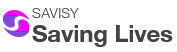

Comprometidos com a saúde e o bem-estar
A Savisy é uma empresa que tem por finalidade promover e facilitar o acesso a medicamentos de diversos países para um tratamento eficaz e de qualidade.
Nossa sede está localizada em São Paulo, SP. Atendemos clientes em todo o Brasil, com uma equipe altamente qualificada pronta para oferecer suporte e assistência.
Temos orgulho de ser credenciados por diversas instituições de saúde e órgãos regulatórios, garantindo a qualidade e a segurança dos nossos produtos. Nossos parceiros incluem:
Entre em contato conosco: contato@savisy.com